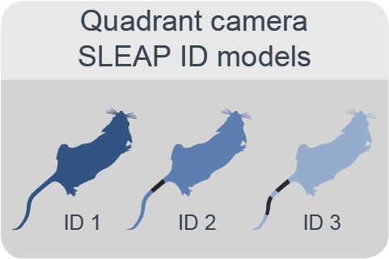
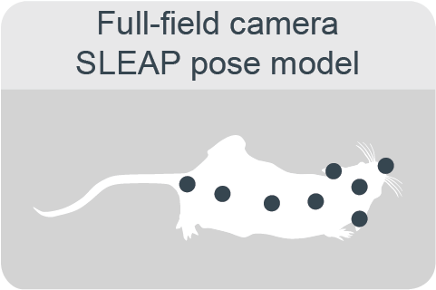
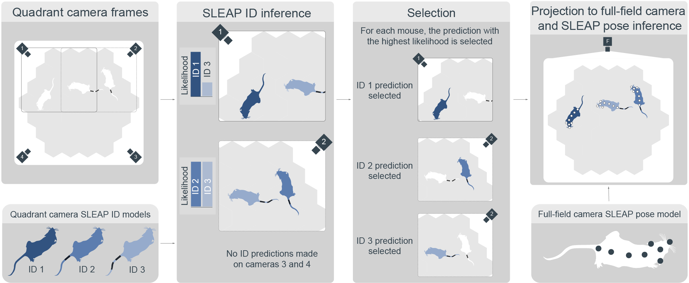

Multi-Animal Tracking#
{kind=link}
Online tracking of location, poses and identity of individual animals allows for quantification of natural behaviours.#
By quantifying position and locomotion speed as well as estimating the poses of multiple animals over weeks, we can identify the emergence of spontaneous behaviours such as foraging, as well as investigate social dynamics and individual strategies and their modulation by environmental influences. This is possible through the multipronged approach using Bonsai and the computer vision software SLEAP on multiple cameras and RFID sensors embedded in a single experimental workflow.
Bonsai centroid tracking#
For simple position tracking, the PositionTracking node in the subject tracking module detects animal centroids using blob detection on masked regions of interest.
This approach is suitable for single-animal experiments or for generating annotated datasets to train SLEAP models.
Relevant repositories: aeon_experiments, aeon_acquisition
SLEAP identity model#
To enable reliable individual identification, distinctive band patterns are tattooed on the mice’s tails as clear and stable markers. Top-down view cameras are used to train experiment-specific SLEAP identity models to track each mouse based on its unique tail pattern. This can be achieved using either a single overhead full-field camera that captures the entire habitat, or a set of four overhead quadrant cameras, each capturing a zoomed-in view of approximately one quarter of the habitat with slight overlaps to ensure continuous coverage. The latter approach offers improved tracking accuracy by providing higher-resolution views of the mice and their tail patterns. These identity models are trained for each unique set of subjects.
Relevant repositories: aeon_sleap_processing
SLEAP pose model#
The SLEAP pose model tracks eight body parts along each mouse using overhead cameras (typically the full-field camera). Unlike identity models, the pose model is designed to be reusable across experiments with similar setups.
Relevant repositories: aeon_sleap_processing
Inference pipeline#
SLEAP model inference is handled through the PoseTracking node in the subject tracking module.
The identity model processes all quadrant views, assigning an identity and a likelihood score to each detected mouse.
For each mouse, the prediction with the highest likelihood is selected and projected onto the full-field camera view.
If zoomed-in quadrant cameras are not available, an identity model trained on the full-field view can be used instead.
When both models are available, full-field tracking serves as a fallback in frames where quadrant-based tracking fails to detect one or more mice.
The pose model then estimates the pose of each mouse in the full-field view.
The final output combines both pose and identity assignments.
Relevant repositories: aeon_sleap_processing, aeon_experiments, aeon_acquisition
RFID validation#
Each mouse is implanted with an RFID tag, enabling automatic detection of its presence at key locations within the habitat which are equipped with RFID antennae (nest, foraging patches, gates). These RFID detections provide ground-truth data for validating the accuracy of identity tracking.
Relevant repositories: aeon_sleap_processing